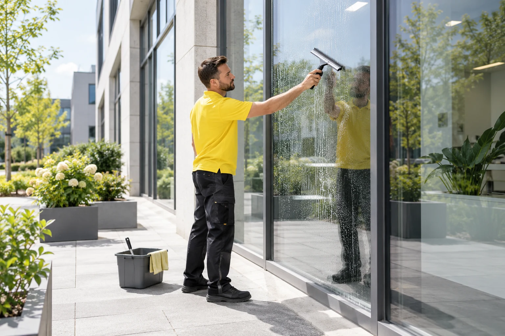

Unsere Leistungen
Sauberkeit in besten Händen.
Professionelle Gebäudereinigung und ergänzende Gebäudedienstleistungen – passend zu Ihrem Objekt in Berlin und Brandenburg.
Professionelle Gebäudereinigung
Vom laufenden Reinigungsalltag bis zur besonderen Aufgabe.
Unterhaltsreinigung
Regelmäßige Reinigung für Büros, Aufgänge, Sanitärbereiche und Einrichtungen.
Mehr erfahren
KI-generiertGlas- & Fassadenreinigung
Streifenfreie Sauberkeit für Glasflächen, Fenster und Fassaden – innen & außen.
Mehr erfahrenGrundreinigung
Intensive Reinigung und Pflege für stark beanspruchte Böden und Oberflächen.
Mehr erfahrenSonderreinigung
Individuelle Reinigung für spezielle Anforderungen und anspruchsvolle Bereiche.
Mehr erfahrenBaureinigung
Bau-, Baufein- und Bauendreinigung nach Neubau oder Sanierung.
Mehr erfahrenRund um Ihre Immobilie
Gepflegte Außenanlagen und zuverlässige Gebäudebetreuung.
 KI-generiert
KI-generiertGrünanlagenpflege
Pflege von Rasenflächen, Hecken, Rabatten und Außenanlagen.
Mehr erfahren KI-generiert
KI-generiertHausmeisterservice
Zuverlässige Betreuung und kleinere Arbeiten rund um Haus und Außenanlagen.
Mehr erfahren KI-generiert
KI-generiertWinterdienst
Winterliche Betreuung von Zugängen, Wegen, Parkplätzen und Einfahrten.
Mehr erfahrenSauberkeit beginnt mit einem Gespräch.
Erzählen Sie uns von Ihrem Objekt. Wir besprechen gemeinsam die passenden Leistungen.